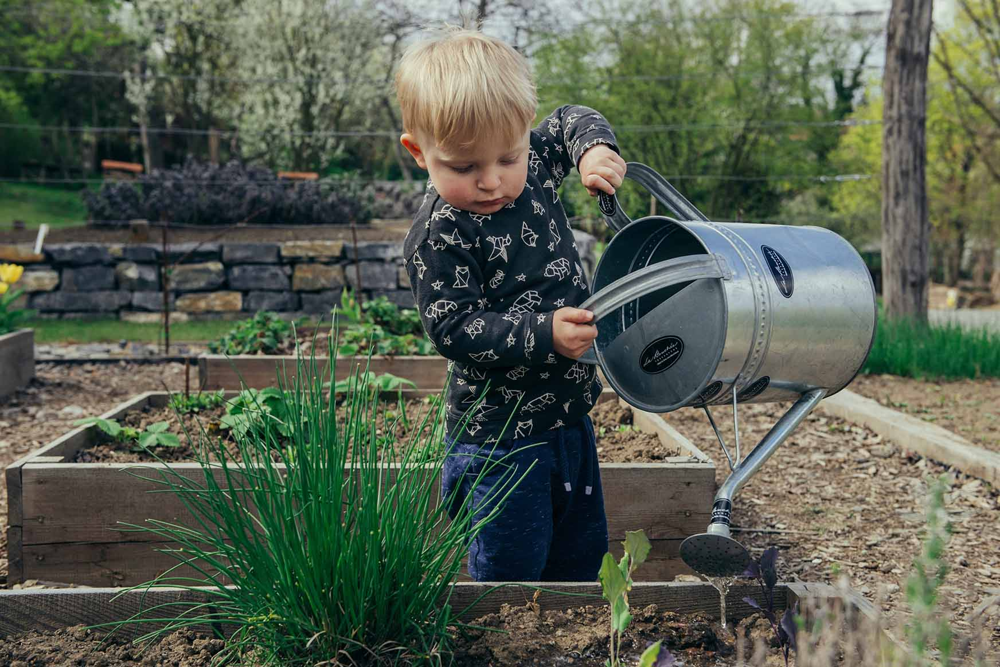

Welcome to Sprout & Grow
Organic gardening, rooted in community.
Discover a space where learning, sustainability, and natural beauty come together. Sprout & Grow offers high-quality organic plants, hands-on education, and guidance to help your garden flourish, no matter your experience level.
Whether you're nurturing your first houseplant or designing a vibrant backyard garden, our team is here to support your journey every step of the way.
Grow with us - join our community today!
Why Shop With Us?
At Sprout & Grow, we provide more than plants. We offer knowledge, sustainability, and trusted support. Our organic selection is carefully nurtured, our tools are eco-friendly, and our team is committed to helping you grow confidently and sustainably.
Community First
We believe gardening brings people together. That's why we partner with local growers, host seasonal workshops, and support community beautification efforts across Raleigh. When you shop with us, you're investing in a greener, more connected community.
Featured Services
- Personalized plant recommendations
- Local delivery for large or specialty orders
- Seasonal garden planning & design support
- Workshops, classes, and hands-on community events
Shop Our Favorites
- Seasonal organic blooms
- Veggie starts, herbs & pollinator plants
- Indoor houseplants for everly light level
- Sustainable tools, soil, and garden care essentials
What's in Season
Discover what's thriving right now: fall perennials, cold-hardy herbs, organic soil boosters, and essential tools for prepping your winter garden beds.
Ready to Grow with Us?
Browse our curated plant collections or join an upcoming workshop to spark inspiration for your next organic gardening project.
A Brief Backstory
Sprout & Grow started as a small backyard shed filled with seedlings and a passion for helping neighbors grow greener spaces. Today, that passion has blossomed into a trusted community nursery offering organic plants, education, and support for gardeners of all experience levels. We're proud to continue nurturing both plants and people—one season at a time.
Learn More About Our Mission
Discover the story behind Sprout & Grow and how our commitment to organic gardening, education, and community shapes everything we do.